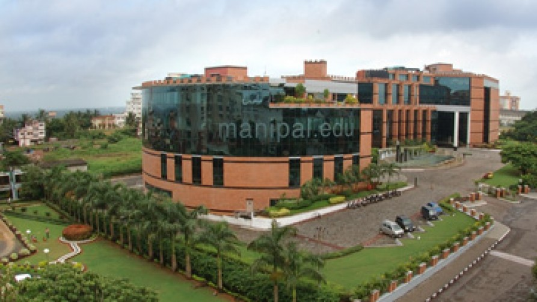
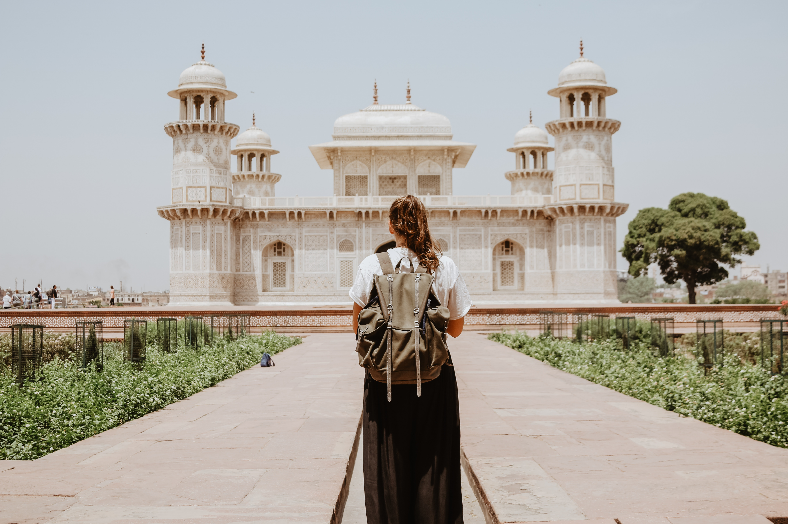

It is impossible not to be astonished by India, a country that is a melting pot of cultures and religions, races and tongues. The diversity of India ranges from the silence and serenity of the mountains to the extravaganza of festivals like Holi. From the deep oceans to the astounding heights, we Indians are the epitome of diversity. Manipal, the striking combination of zealous youth and the land of tranquility, is the face of this diversity.
Located on a plateau and nestled between the Western Ghats on the east and the Arabian Sea on the west, is the bustling town of Manipal. It is known not only for its scenic beauty, but also for academic excellence. Home to Manipal Academy of Higher Education (MAHE), it houses nearly 28,000 students from across 52 countries, leading to the prevalence of an extremely cosmopolitan culture. Being a student centric town, Manipal has all facilities and amenities required for the welfare of students.
MAHE has been in existence for the past 60 years and has carved a niche in the country due to its state of art infrastructure, scholastic excellence, and an age old reputation. It has 21 constituent colleges specializing in higher education in various fields including engineering, medicine, allied health sciences, architecture, management and hospitality. The university also has collaborations with renowned universities all across the world.
To know more about Manipal Academy of Higher Education, visit: http://manipal.edu/mu.html
Before you arrive:
Travelling to, and living in a foreign country may seem to be a daunting prospect, but it helps to know more about the place you’re going to call home for the next few months. Here are some pointers that will give you an idea about what to expect once you reach Manipal:
- The temperature generally ranges from 24-38 degrees Celsius. The climate is generally humid and warm throughout the year. Manipal receives heavy rainfall, particularly from June to November. Interns are advised to carry light cotton clothing
- The local mode of transportation is auto rickshaw. Local buses are available for travelling within the state. Bicycles can be availed on request.
- Being a cosmopolitan city, there is no specific food culture in Manipal. One can relish food varying from Indian dishes to Chinese, Oriental, Mexican, Italian and Thai cuisine. Manipal is also a haven for people who love seafood. Popular fast food chains like KFC, Dominos and Pizza Hut also have outlets here.
- Nestled in nature’s cradle, there is no dearth of scenic places to visit around Manipal, like beaches, waterfalls, islands.Note: Visiting beaches/islands during monsoon (July-November) is not encouraged by IAESTE LC Manipal, due to safety concerns.
Getting to Manipal:
Manipal is well connected by road, rail and air to all major cities of India. There are two major cities close to Manipal – Udupi (5km) and Mangalore (65km). The following modes of transport can be availed:
- AIR:
Nearest airport (Domestic and International) - Mangalore Mangalore has regular flight service to major Indian cities such as New Delhi, Mumbai, Bangalore and Hyderabad. There are direct international flights to Mangalore from Dubai, Abu Dhabi, Muscat, Doha, Qatar, Bahrain and Kuwait. Prepaid taxis are available at the airport. However, a university cab will be sent to pick you up. For the flight fares, flight bookings, flight schedule and other details, please visit:
www.makemytrip.com or www.yatra.com
- ROAD:
There are private and state owned car and bus services from all major Indian cities. Direct buses to Manipal are available from Mangalore, Bangalore, Goa, Hyderabad and Mumbai. For bus bookings and further information, please visit www.redbus.com or www.makemytrip.com.
- TRAIN:
Closest railway station – Udupi.
Manipal is linked to all important cities of India via the extensive Indian Railway network. Please note that to secure a seat on any train, you need to make a booking well in advance. For railway bookings, train timings and other information, please visit:https://www.irctc.co.in
Once you reach Manipal, you will be escorted to the IAESTE office. A local committee member will brief you about all the formalities that need to be completed.
Accomodation:
IAESTE LC Manipal provides accommodation to all interns free of cost, only for the duration of their internship.
The accommodation to be provided will be a twin sharing hostel room for international students with an attached bath/toilet. Kitchen facilities will not be provided. There are also various economically priced laundry services available in the hostel.
If the trainee wishes to have additional facilities like furnished accommodation, kitchen facility etc., subject to availability, they must arrange for the same on their own. However, do inform the local committee in such cases.

Here are a few things that need to be kept in mind before you reach India:
- Ensure that your visa, passport and insurance documents are in order. Keep a copy of all important documents.Keep your passport with you at all times, since it’s the most important proof of identity. Leave a copy of it with your family, and keep digital copies (in case it gets misplaced).
- It is highly recommended that you bring sufficient cash along with you to support yourself before you receive your stipend at the end of your 1st month. Wait till you get to Manipal to exchange currency, as better exchange rates are available here, than at the airports.
- In case you are carrying any electronic equipment, carry an adapter for 230V AC, 50Hz. India uses “Type D” electrical plug points.
Check if your mobile phone is compatible with the local Indian GSM frequency of 900/1800. Ensure that your phone is unlocked, especially if you have an iPhone.
- Take any general vaccinations you feel you may need because of the change of environment you may experience in India.
Inform authorities about any chronic or serious allergies (pollen fever,asthma, etc). Carry a copy of your medical history, if any.
- Have at least 15 passport size photographs.
- The baggage limit for domestic airlines in India is 15kgs, plus 7kgs for a handbag. If your luggage gets misplaced at the airport, please get proper documents from the airport authorities to ensure it gets delivered to the address:
IAESTE Office, 1st floor, Innovation Centre
MIT, Manipal Academy of Higher Education
Manipal-576104, Karnataka
Visa Regulations:
- Please note that Tourist Visas are NOT accepted and the intern will have to return if they are in India on a Tourist Visa.
- Please come to Manipal before you go elsewhere in India, so that we can ensure that your visa documents are in order. You might have to be registered at the FRO (Foreign Registration Office) if it’s stamped as: “Registration required within 14 days of arrival in India”.
- If not registered within the stipulated period, a foreigner is liable to a penalty of Indian currency equivalent to US$ 30.
- Foreigners registered with the police have to inform the FRO if they intend to leave the place of registration for 8 weeks or more, and need to collect an exit permit from the place of registration 7 days prior from their day of departure from India.
Facilities
Manipal University provides facilities like library, sports complex, gymnasium, swimming pool etc. to all the IAESTE Interns that they can easily avail through the course of your internship